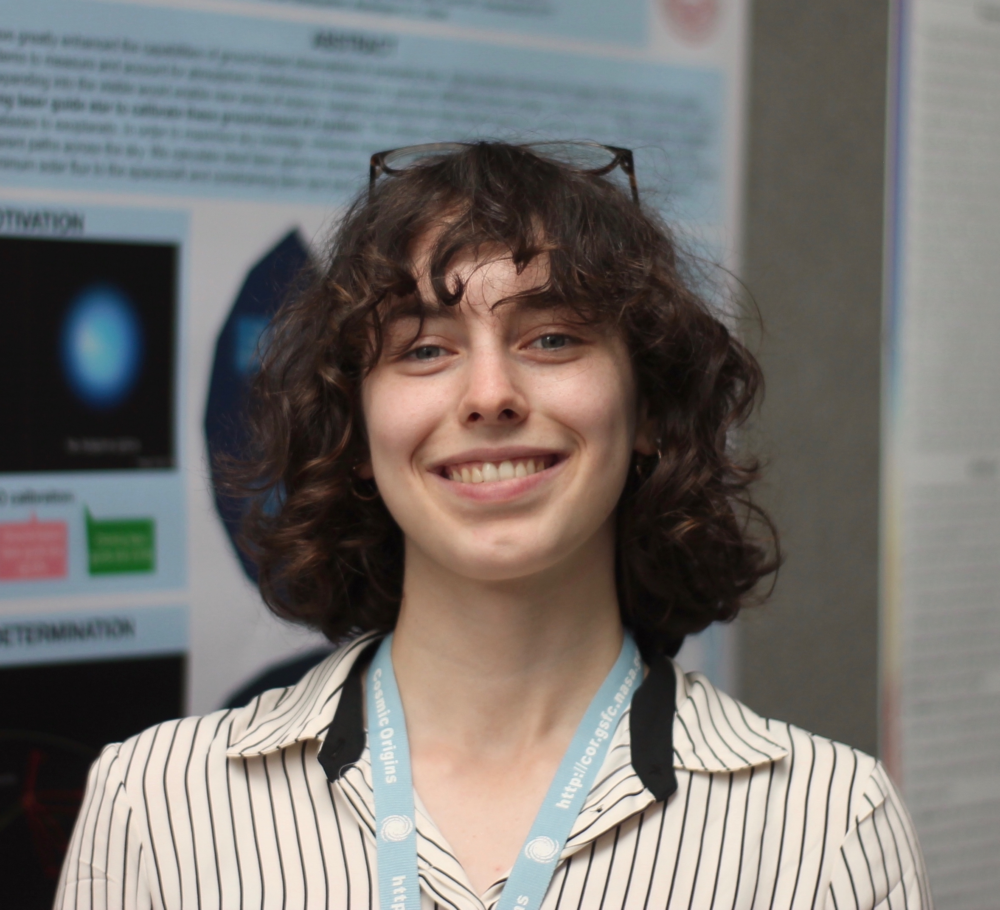

About Me
Education: Currently I am an undergraduate at Northeastern University studying physics.
Research Interests: I am broadly interested in doing observational exoplanet astronomy. On the science side, my previous work has been interested in characterising planet migration and system dynamics from transit photometry. On the engineering side, I have worked on systems engineering to support exoplanet imaging missions, including the Orbiting Starshade and Orbiting Configurable Artificial Star (ORCAS) missions.
Publications: ORCID
- Isabel J. Kain, Elisabeth R. Newton, Jason A. Dittmann, Jonathan M. Irwin, Andrew W. Mann, Pa Chia Thao, David Charbonneau, Jennifer G. Winter. The Young Planetary System K2-25: Constraints on Companions and Starspots. ADS
- John C. Mather, Jonathan Arenberg, Simone D'Amico, Webster Cash, Matthew Greenhouse, Anthony Harness, Tiffany Hoerbelt, Isabel Kain, Wolfgang Kausch, Stefan Kimeswenger, Carey Lisse, Stefan Martin, Stefan Noll, Eliad Peretz, Norbert Przybilla, Sara Seager, Stuart Shaklan, Ignas Snellen, Phil Willems. Orbiting Starshade: Observing Exoplanets at visible wavelengths with GMT, TMT, and ELT ADS
- Eliad Peretz, John Mather, Richard Slonaker, John O'Meara, Sara Seager, Randy Campbell, Tiffany Hoerbelt, Isabel Kain. Orbiting Configurable Artificial Star (ORCAS) for Visible Adaptive Optics from the Ground ADS
- Pa Chia Thao, Andrew W. Mann, Marshall C. Johnson, Elisabeth R. Newton, Xueying Guo, Isabel J. Kain, Aaron C. Rizzuto, David Charbonneau, Paul A. Dalba, Eric Gaidos, Johnathan M. Irwin, Adam L. Kraus. Zodiacal Exoplanets in Time (ZEIT). IX. A Flat Transmission Spectrum and a Highly Eccentric Orbit for the Young Neptune K2-25b as Revealed by Spitzer. ADS
- Ian J. M. Crossfield, Natalia Guerrero, Trevor David, Samuel N. Quinn, Adina D. Feinstein, Chelsea Huang, Liang Yu, Karen A. Collins, Benjamin J. Fulton, Bjoern Benneke, Merrin Peterson, Allyson Bieryla, Joshua E. Schlieder, Molly R. Kosiarek, Makennah Bristow, Elisabeth Newton, Megan Bedell, David W. Latham, Jessie L. Christiansen, Gilbert A. Esquerdo, Perry Berlind, Michael L. Calkins, Avi Shporer, Jennifer Burt, Sarah Ballard, Joseph E. Rodriguez, Nicholas Mehrle, Sara Seager, Jason Dittmann, David Berardo, Lizhou Sha, Zahra Essack, Zhuchang Zhan, Martin Owens, Isabel Kain, John H. Livingston, Erik A. Petigura, Courtney D. Dressing, Erica J. Gonzales, Howard Isaacson, Andrew W. Howard. A TESS Dress Rehearsal: Planetary Candidates and Variables from K2 Campaign 17. ADS
- John C. Mather, Eliad Peretz, Jonathan Arenberg, Simone D’Amico, Michele Cirasuolo, Matthew Greenhouse, Anthony Harness, Sergi Hildebrandt, Tiffany Hoerbelt, Isabel Kain, Wolfgang Kausch, Stefan Kimeswenger, Carey Lisse, Stefan Martin, Stefan Noll, Norbert Przybilla, Sara Seager, Stuart Shaklan, Richard Slonaker, Ignas Snellen, Phil Willems. Orbiting Starshade to Observe Exoplanets with Ground-based Telescopes. Under review.
- Eliad Peretz, Isabel Kain, Ryan Caine, Liz Cantlebary, John C Mather, John Carr, Tobias Hanrath, Kevin Hall. A Theoretical Investigation and Meta-Analysis of Solar-Powered Spacecraft for Science Space Missions. Under review.